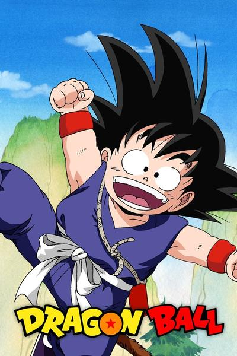
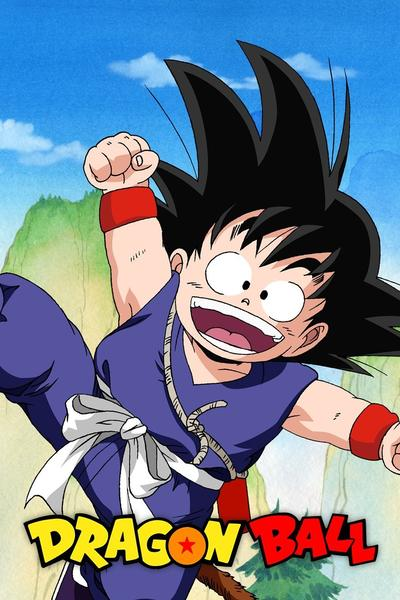
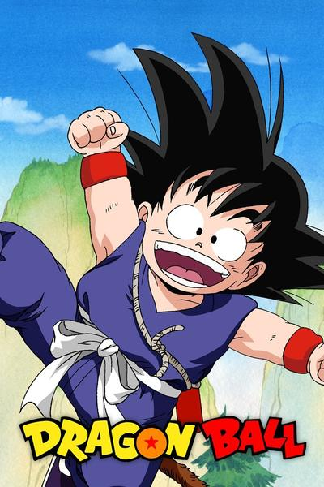
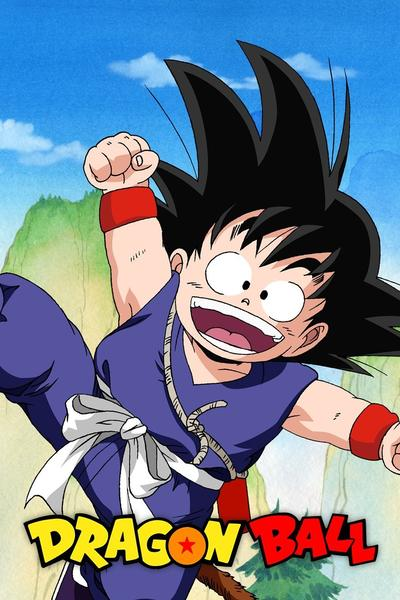
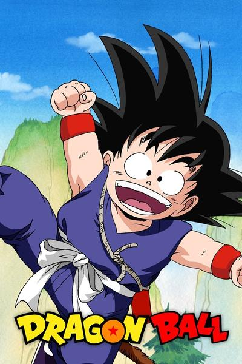

Dragon Ball follows the adventures of the protagonist Goku, a strong naive boy who, upon meeting Bulma, sets out to gather the seven wish-granting Dragon Balls. After becoming a student of martial arts master Master Roshi, he and his fellow pupil Krillin enter a tournament that attracts the most powerful fighters in the world. He then sets out on his own and winds up facing and destroying the Red Ribbon Army single-handedly. When Krillin is later murdered after another tournament, Goku exacts revenge on his killer, Piccolo.The series begins with a young monkey-tailed boy named Goku befriending a teenage girl named Bulma. Together, they go on an adventure to find the seven mystical Dragon Balls , which have the ability to summon the powerful dragon Shenron, who can grant whoever summoned him their greatest desire. The journey leads to a confrontation with the shape-shifting pig Oolong, as well as a desert bandit named Yamcha and his companion Pu'ar, who all later become allies; Chi-Chi, whom Goku unknowingly agrees to marry; and Emperor Pilaf, an blue imp who seeks the Dragon Balls to fulfill his desire of becoming ruler of the world. After Oolong stops Pilaf from using the Dragon Balls by wishing for a pair of panties, Goku undergoes rigorous training regimes under the martial artist Master Roshi in order to fight in the Tenkaichi Budōkai that attracts the most powerful fighters in the world. A monk named Krillin becomes his training partner and rival, but they soon become best friends. After the tournament, Goku sets out on his own to recover the Dragon Ball his deceased grandfather left him and encounters a terrorist organization known as the Red Ribbon Army, whose diminutive leader, Commander Red, wants to collect the Dragon Balls so that he can use them to become taller. He almost single-handedly defeats the army, including their hired assassin Mercenary Tao, whom he originally loses to, but after training under the hermit Korin, easily beats. Goku reunites with his friends to defeat Fortuneteller Baba's fighters and have her locate the last Dragon Ball in order to revive a friend killed by Tao.
